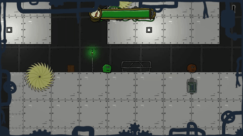
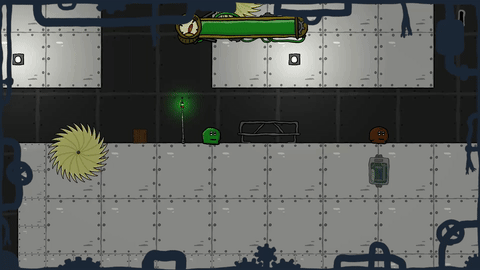

The Kantist!
Chaos in the Lab:
A mysterious accident helps you
escape your cage in the laboratory.
You flee into the vents hoping to find some safety and freedom.
On your way you meet several other test subjects, slimes, modified rats and other creatures, some are nice, some rather not.
But that's not the only dangers waiting for you in the vents of the laboratory. Thankfully, you yourself were designed in the lab to be a spy in enemy facilities, that should help...
Gameplay
General:
"The Kantist" is an adventure 2D-Platformer.
You control a slime and can explore the deep and reaching vents of the lab facility, where you were created to be a spy and eventually escaped from.
Find several different Zones, master minigames and befriend other test subjects.
But be careful, it might not just be friends waiting for you in the unknown...
Abilities:
As a spy, you have many different Abilities:
- Dash and grapple:
Dash and grapple through the vents and try not to hit
any saws, trust me, it's better this way...

- Slow Down:
Things are getting a bit too fast for you? Well, good they built a
Time-Slowing ability into you, let's hope it works

The Laboratory:
Explore a deep and expansive world of handdrawn vents:
There are a total of 3 Zones and hundreds of different paths to take!
- You choose the direction:
Choose your own path at every turn and have a new experience on every
playthrough

- Interact:
Interact with other test subjects, make friendships and play
Minigames with them

Be careful though, not every experiment of this lab is as nice to you as
most... get in the wrong parts of the vents and well...

Story
A leap into the unknown
It all started one peculiar night. You had some extra hard exercises
during the day, so you were in a deep sleep on the little mattress
they put in your cage. It was a bit weird that they even took
the time to make a custom mattress for you, while neglecting most
other things. But you weren't complaining, it was needed after their
usual experiments.
You were dreaming of something... something nice... but you don't remember anymore... and then, it happened.
BANG!!!
You jumped awake hit by a small shockwave, ears whining from the loud noise, the laboratory in flames in front of you. Bits and pieces of the glass wall of your cage layed on the floor next to you.
To your left the vent cover was ripped into pieces and you spotted a round silhouette in the shadows of the opening. "What had happened?! An experiment gone wrong? There have been problems, but it has never...".
You tried to finish the thought but you were ripped out of your head by a deep voice coming from the vent:
"Come ... have to ... safety ... no time!"
You barely understood him, your ears were still ringing and there was lots of comotion in the lab, but you knew what the silhouette wanted. You stepped closer and entered the vents.
The silhouette revealed itself to be another slime, like you. But a dark brown in color and a little bigger than you. It wasn't the usual slime you had talked to through the vent cover before, that much you could tell. You were hesitant at first but he seemed like he wanted to help you and frankly, he was the best chance of freedom you've ever had. You couldn't throw this away. He made an eye movement towards the darkness of the now smoke-filled vent and started walking, you followed.
After some time you both ended up at a ledge. You don't know whether it was the darkness, the smoke or just the sheer bottomlessness of the vent-chasm in front of you, you just knew that there was no bottom in sight, not even a hint of it.
You've had seen worse, but this ... this was new, this wasn't a controlled environment, there could be anything down there...
Suddenly, without saying a word, your companion jumped.
You followed.
...
You'll be meeting new friends, fighting new foes and making new memories. But who knows what exactly the future has in store for you.
Future Updates:
For now, "The Kantist" is still in closed development, but we
are getting closer and closer to the release of our steam page.
We are looking to release the game later in 2024, so be sure to stay tuned and wishlist our game on steam (once the steam page is up), if you're interested.
Thank you for your support, we hope to deliver the best gaming experience possible.
We are looking to release the game later in 2024, so be sure to stay tuned and wishlist our game on steam (once the steam page is up), if you're interested.
Thank you for your support, we hope to deliver the best gaming experience possible.